Инструкция · ChatGPT · Фото.
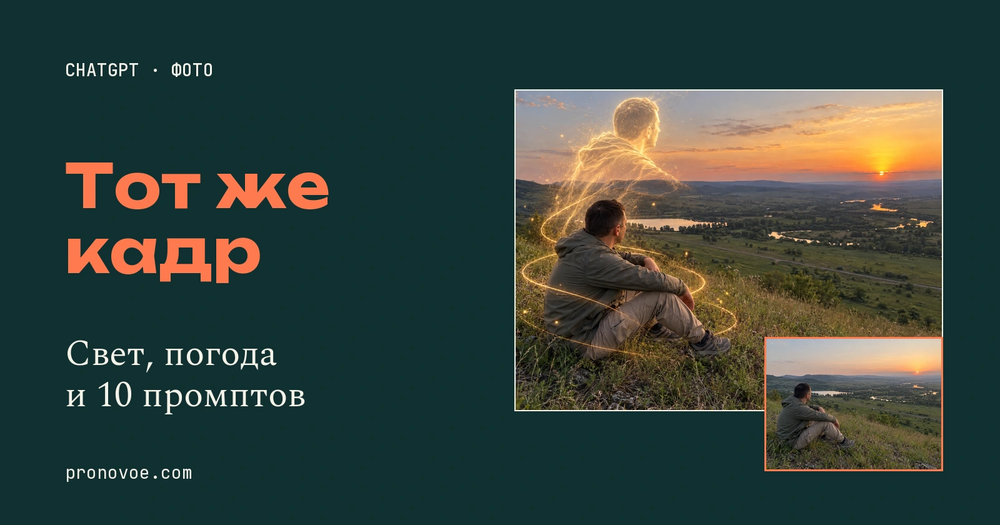
10 фотоэффектов в ChatGPT: примеры до и после и промпты
Начальный уровень
Просишь ChatGPT добавить эффект к фото, а он заодно меняет человека и фон. Здесь все десять эффектов сделаны из одного исходника: мужчина сидит на холме над рекой. Под каждым результатом показано это же фото до обработки, рядом - полный промпт. Разберём, какие условия в запросе помогают сохранить исходный кадр.
Открой первый пример и нажми «Скопировать». В новом чате ChatGPT прикрепи своё фото с человеком и небом, вставь запрос и замени описание мужчины, одежды и пейзажа на описание своего снимка. Отправь сообщение: в ответ получишь вариант фото со светящимся силуэтом. Если изменились лицо или поза, вернись к исходнику и уточни эти запреты в запросе.
Все промпты ниже написаны под показанный здесь снимок. Если ты загрузишь в ChatGPT свою фотографию вместо нашего исходника, описание мужчины, одежды и пейзажа в запросе нужно заменить описанием твоего фото. Как это сделать, показано в разделе «Как повторить эффект на своём фото».
Содержание статьи
Почему эффект меняет само фото
Короткое «добавь туман» не объясняет нейросети, что человек, его поза и изгибы реки должны остаться на месте. Вместе с погодой может измениться и сам снимок: поворот головы, одежда, расстояние до камеры.
Поэтому в начале каждого промпта мы отдельно описываем то, что нельзя менять. Эффект идёт после этого запрета. Такой запрос задаёт понятные границы правки, хотя сравнивать результат с исходником всё равно нужно.
Ниже примеры редактирования одного кадра. Исходник с человеком на холме и все его варианты созданы нейросетью. В статье используются те же изображения, что и в подборке, без дополнительной перерисовки для страницы.
Какие строки нельзя выкидывать из промпта
В наших запросах сначала сказано: «Отредактируй только загруженное исходное фото». Дальше перечислены человек, одежда, поза и видимые предметы. Затем идёт просьба сохранить ракурс, границы кадра и размеры объектов. Только после этого добавляется свет, погода или другой эффект.
Для нашего исходника ничего в описании менять не нужно. Если загружаешь свою фотографию, замени в запросе сведения о мужчине, его одежде, реке и холмах на то, что видно на ней. Запрет менять позу, ракурс и расположение предметов оставь.
Например, для человека в синей футболке у окна. Если именно это видно на твоём фото, замени весь фрагмент от «Сохрани того же мужчину» до «обеих стоп» на: «Сохрани того же человека в синей футболке у окна, черты лица, направление взгляда, положение головы, плеч, рук, пальцев и всего видимого тела».
Следующее предложение, от «Сохрани точную композицию» до «на прежних местах», замени на: «Сохрани точную композицию, ракурс, кадрирование и пропорции исходника: тот же человек у того же окна, те же стена и оконная рама на прежних местах». Дальше в выбранном запросе тоже замени упоминания мужчины, холма и долины, если их нет на твоём фото.
Для такого комнатного кадра выбери «Винтажную вспышку»: она меняет свет на человеке и ближнем плане. Метеор, туман и луна в примерах требуют видимого неба или пространства вдали; добавлять их в комнату по этому же описанию не нужно.
Промпт здесь - обычный текст задания. Названия эффектов не являются встроенными командами ChatGPT, специальные слова со слэшем не нужны.
Как повторить эффект на своём фото
- Выбери исходник. Для метеора и луны выбери снимок с открытым небом. Для тумана нужна видимая даль: на тесном портрете он может закрыть лицо вместо долины.
- Загрузи фото в ChatGPT. Прикрепляй именно исходник, даже если уже сделал другой эффект. В справке OpenAI описано редактирование загруженных изображений обычным текстом.
- Скопируй один запрос ниже. Кнопка забирает полный текст, включая все условия сохранения кадра. Для своего снимка исправь описание человека, одежды и местности, затем отправь сообщение с фото.
- Сравни результат и исходник. Посмотри на лицо, руки, обувь и линию горизонта. Для другого эффекта снова прикрепи исходное фото. Если использовать предыдущий результат, новые изменения могут накопиться.
Результат: у тебя исходник и отдельный вариант с выбранным эффектом. Если ChatGPT изменил лицо, руки или линию горизонта, снова загрузи исходник и повтори запрос с уточнением этих деталей.
В блоках дальше большой результат стоит сверху, исходник - под ним. В блоке запроса видна часть про сам эффект. На телефоне этот блок находится под парой фото. Общие условия можно раскрыть по строке «Показать полный промпт»; кнопка «Скопировать» всегда копирует всё целиком.
1. Светящийся силуэт
Над человеком поднимается золотой световой двойник, вокруг появляются тонкие спирали. Сам человек остаётся в кадре.
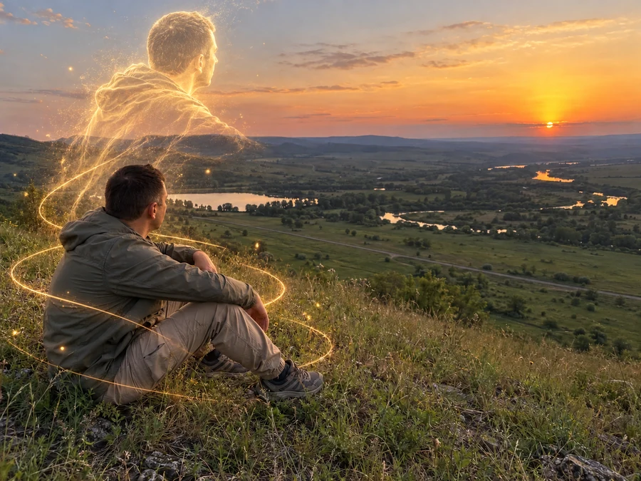
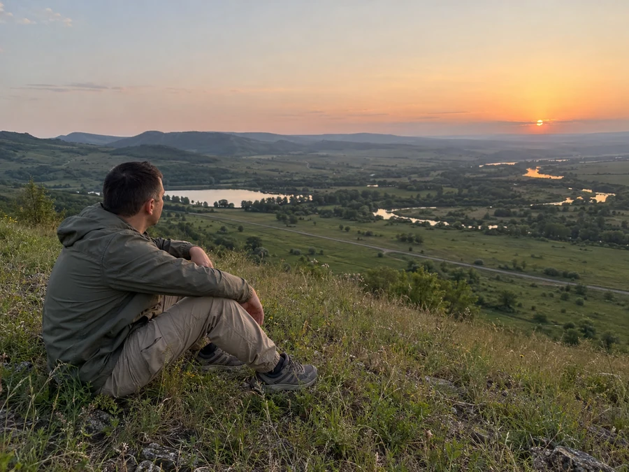
Добавь один явно фантастический эффект поверх реалистичного снимка: из сидящего мужчины вверх поднимается крупный полупрозрачный золотой световой силуэт того же мужчины, как длинная выдержка с голограммой. Силуэт расположен сразу над его спиной и головой, повторяет поворот головы вправо и занимает левую часть неба, не обрезан сверху; у него нет новых рук с отдельными пальцами, низ растворяется в мягких световых нитях.
Показать полный промпт
Отредактируй только загруженное исходное фото. Сохрани того же мужчину с короткой тёмной стрижкой, оливковую ветровку, песочно-бежевые брюки, серые треккинговые кроссовки, черты и видимый край лица, направление взгляда, положение головы, плеч, рук, пальцев, коленей и обеих стоп. Сохрани точную композицию, ракурс, горизонтальное кадрирование и пропорции исходника: человек слева на травяном склоне, те же изгибы реки, озеро, дорога и холмы на прежних местах. Камеру не двигай, человека не увеличивай и не уменьшай, не переставляй объекты. Все реальные предметы должны выглядеть снятыми смартфоном: натуральная кожа и ткань со складками, реальные травинки, лёгкий шум сенсора, слегка мягкий дальний план, без ретуши, глянца, пластика, живописности и чрезмерной резкости. Не добавляй лишние пальцы, конечности, предметы, людей, надписи, логотипы, рамки, водяные знаки или коллажи. Верни одно полное горизонтальное фото тех же пропорций. Добавь один явно фантастический эффект поверх реалистичного снимка: из сидящего мужчины вверх поднимается крупный полупрозрачный золотой световой силуэт того же мужчины, как длинная выдержка с голограммой. Силуэт расположен сразу над его спиной и головой, повторяет поворот головы вправо и занимает левую часть неба, не обрезан сверху; у него нет новых рук с отдельными пальцами, низ растворяется в мягких световых нитях. Вокруг сидящего мужчины две тонкие золотые световые спирали и несколько светящихся пылинок. Исходный мужчина остаётся непрозрачным и неизменным, руки и обувь обычные. Сохрани естественный умеренный закат и настоящую фотографическую фактуру травы, воды, кожи и одежды. Это фото с добавленным световым спецэффектом, а не иллюстрация; запрет на новых людей не относится только к этому единственному световому двойнику. Не подсвечивай контуры настоящего тела неоновым ореолом.Результат: Силуэт не должен перекрывать лицо или превращать руки и одежду в светящиеся контуры.
2. Туман
Долину заполняют слои тумана. Человек и ближняя трава остаются различимыми, дальние холмы становятся бледнее.
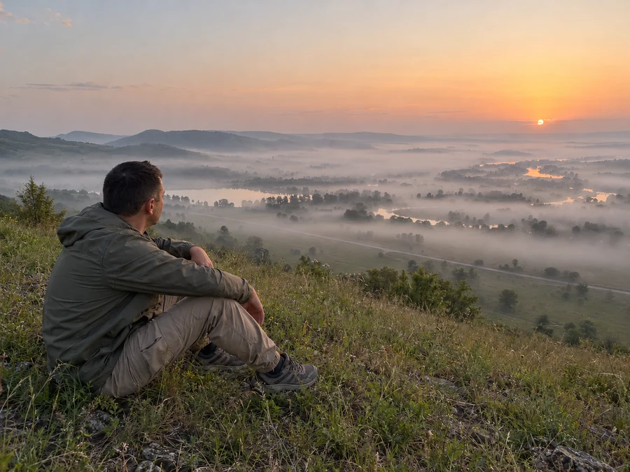
Добавь плотный естественный приземный туман в долине: слои бело-серого тумана между деревьями, над водой и у подножий холмов. Река местами проступает сквозь туман, дальние холмы становятся бледными силуэтами.
Показать полный промпт
Отредактируй только загруженное исходное фото. Сохрани того же мужчину с короткой тёмной стрижкой, оливковую ветровку, песочно-бежевые брюки, серые треккинговые кроссовки, черты и видимый край лица, направление взгляда, положение головы, плеч, рук, пальцев, коленей и обеих стоп. Сохрани точную композицию, ракурс, горизонтальное кадрирование и пропорции исходника: человек слева на травяном склоне, те же изгибы реки, озеро, дорога и холмы на прежних местах. Камеру не двигай, человека не увеличивай и не уменьшай, не переставляй объекты. Все реальные предметы должны выглядеть снятыми смартфоном: натуральная кожа и ткань со складками, реальные травинки, лёгкий шум сенсора, слегка мягкий дальний план, без ретуши, глянца, пластика, живописности и чрезмерной резкости. Не добавляй лишние пальцы, конечности, предметы, людей, надписи, логотипы, рамки, водяные знаки или коллажи. Верни одно полное горизонтальное фото тех же пропорций. Добавь плотный естественный приземный туман в долине: слои бело-серого тумана между деревьями, над водой и у подножий холмов. Река местами проступает сквозь туман, дальние холмы становятся бледными силуэтами. Человек и ближняя трава остаются чётко различимыми и не размыты фильтром. Свет заката мягкий и рассеянный, без яркой оранжевой заливки. Разница с исходником должна быть заметна сразу по заполненной туманом долине. Не добавляй облака дыма, снег или дождь.Результат: Смотри на долину: туман лежит между деревьями и над водой, а не размывает весь снимок.
3. Метеор
Один яркий след в небе и прохладные сумерки. Метеор находится далеко, над землёй ничего не взрывается.
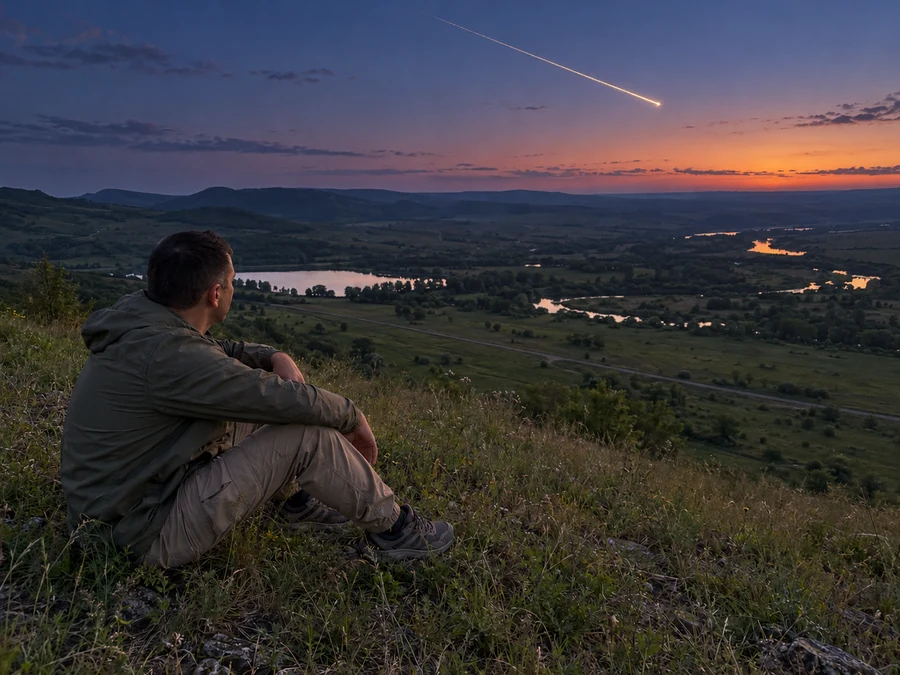
Добавь в открытое небо один отчётливый яркий метеор: небольшая бело-золотая головная часть и длинный диагональный золотистый след из верхнего центра к правой части неба. Переведи время в умеренные сине-фиолетовые сумерки, оставив бледно-тёплую полосу заката у горизонта и реалистичную экспозицию человека.
Показать полный промпт
Отредактируй только загруженное исходное фото. Сохрани того же мужчину с короткой тёмной стрижкой, оливковую ветровку, песочно-бежевые брюки, серые треккинговые кроссовки, черты и видимый край лица, направление взгляда, положение головы, плеч, рук, пальцев, коленей и обеих стоп. Сохрани точную композицию, ракурс, горизонтальное кадрирование и пропорции исходника: человек слева на травяном склоне, те же изгибы реки, озеро, дорога и холмы на прежних местах. Камеру не двигай, человека не увеличивай и не уменьшай, не переставляй объекты. Все реальные предметы должны выглядеть снятыми смартфоном: натуральная кожа и ткань со складками, реальные травинки, лёгкий шум сенсора, слегка мягкий дальний план, без ретуши, глянца, пластика, живописности и чрезмерной резкости. Не добавляй лишние пальцы, конечности, предметы, людей, надписи, логотипы, рамки, водяные знаки или коллажи. Верни одно полное горизонтальное фото тех же пропорций. Добавь в открытое небо один отчётливый яркий метеор: небольшая бело-золотая головная часть и длинный диагональный золотистый след из верхнего центра к правой части неба. Переведи время в умеренные сине-фиолетовые сумерки, оставив бледно-тёплую полосу заката у горизонта и реалистичную экспозицию человека. Метеор находится далеко в небе и не падает на землю; никаких взрывов, разрушений, огня на траве, космических кораблей или множества метеоров. Трава, вода и человек сохраняют вид обычного фото смартфона.Результат: В небе должен быть один метеор, без огня на траве и новых предметов.
4. Лунный свет
Закат сменяется ночью. Справа появляется небольшая полная луна, на воде под ней - серебристый блик.
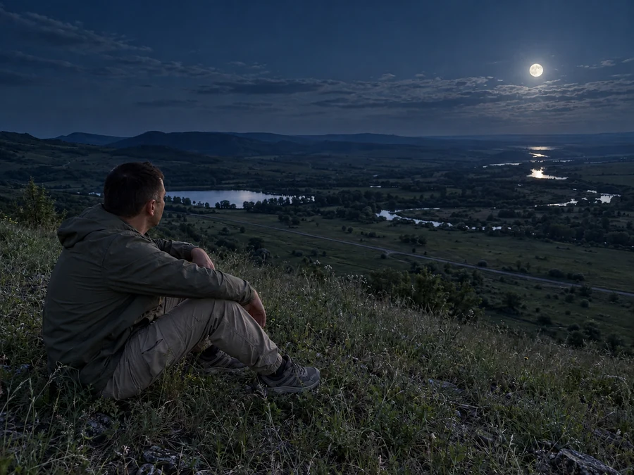
Преврати закат в реалистичную ночь при полной луне. Убери солнечный диск и закатную оранжевую полосу, на том же правом участке неба появится небольшая полная луна.
Показать полный промпт
Отредактируй только загруженное исходное фото. Сохрани того же мужчину с короткой тёмной стрижкой, оливковую ветровку, песочно-бежевые брюки, серые треккинговые кроссовки, черты и видимый край лица, направление взгляда, положение головы, плеч, рук, пальцев, коленей и обеих стоп. Сохрани точную композицию, ракурс, горизонтальное кадрирование и пропорции исходника: человек слева на травяном склоне, те же изгибы реки, озеро, дорога и холмы на прежних местах. Камеру не двигай, человека не увеличивай и не уменьшай, не переставляй объекты. Все реальные предметы должны выглядеть снятыми смартфоном: натуральная кожа и ткань со складками, реальные травинки, лёгкий шум сенсора, слегка мягкий дальний план, без ретуши, глянца, пластика, живописности и чрезмерной резкости. Не добавляй лишние пальцы, конечности, предметы, людей, надписи, логотипы, рамки, водяные знаки или коллажи. Верни одно полное горизонтальное фото тех же пропорций. Преврати закат в реалистичную ночь при полной луне. Убери солнечный диск и закатную оранжевую полосу, на том же правом участке неба появится небольшая полная луна. Холодный сине-серебристый лунный свет мягко освещает склон, мужчину и далёкие холмы, на воде справа под луной узкий серебристый блик. Ночные тени глубокие, но фактура одежды и положение рук читаются; естественный шум смартфона при слабом свете. Луна нормального углового размера, не гигантская. Без дневного солнца, метеоров, световых следов, снега, дождя и неоновой подсветки человека.Результат: Проверь, что солнечный диск исчез, а луна не стала размером с половину неба.
5. Дождливая ночь
Небо темнеет, видны дождевые полосы, мокрая трава и влажная одежда. Долина остаётся на прежнем месте.
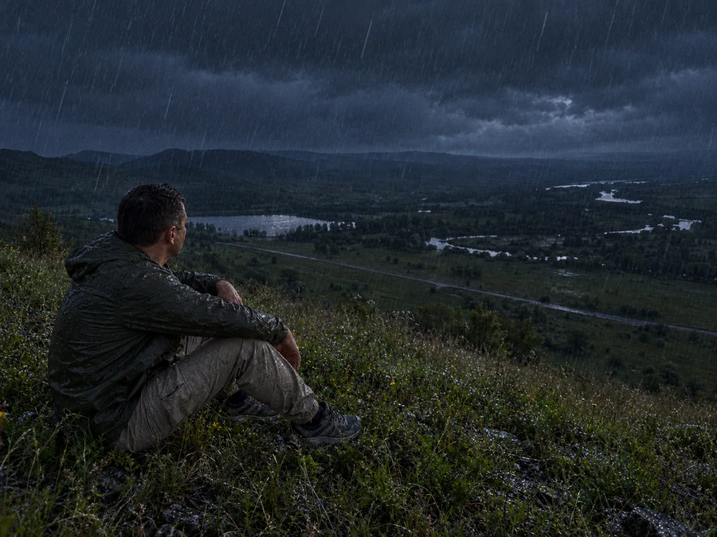
Преврати сцену в реалистичную дождливую ночь на природе. Небо тёмно-сине-серое и облачное, солнечного диска нет.
Показать полный промпт
Отредактируй только загруженное исходное фото. Сохрани того же мужчину с короткой тёмной стрижкой, оливковую ветровку, песочно-бежевые брюки, серые треккинговые кроссовки, черты и видимый край лица, направление взгляда, положение головы, плеч, рук, пальцев, коленей и обеих стоп. Сохрани точную композицию, ракурс, горизонтальное кадрирование и пропорции исходника: человек слева на травяном склоне, те же изгибы реки, озеро, дорога и холмы на прежних местах. Камеру не двигай, человека не увеличивай и не уменьшай, не переставляй объекты. Все реальные предметы должны выглядеть снятыми смартфоном: натуральная кожа и ткань со складками, реальные травинки, лёгкий шум сенсора, слегка мягкий дальний план, без ретуши, глянца, пластика, живописности и чрезмерной резкости. Не добавляй лишние пальцы, конечности, предметы, людей, надписи, логотипы, рамки, водяные знаки или коллажи. Верни одно полное горизонтальное фото тех же пропорций. Преврати сцену в реалистичную дождливую ночь на природе. Небо тёмно-сине-серое и облачное, солнечного диска нет. Видны естественные диагональные полосы дождя на разных расстояниях, капли на ветровке, мокрый блеск ткани и травы, рябь от дождя на воде. Света достаточно, чтобы узнавались исходный человек, положение рук и обувь, но это явно ночная сцена с шумом сенсора. Ветровка темнеет от влаги, её исходный оливковый цвет и фасон сохраняются. Не добавляй зонты, городские фонари, новые дома, новые источники света, молнии и лужи, парящие в воздухе.Результат: Дождь должен читаться на фоне, а лицо и силуэт человека - оставаться различимыми.
6. Звездопад
Над той же долиной появляется звёздное небо с Млечным Путём и тонкими метеорными следами.
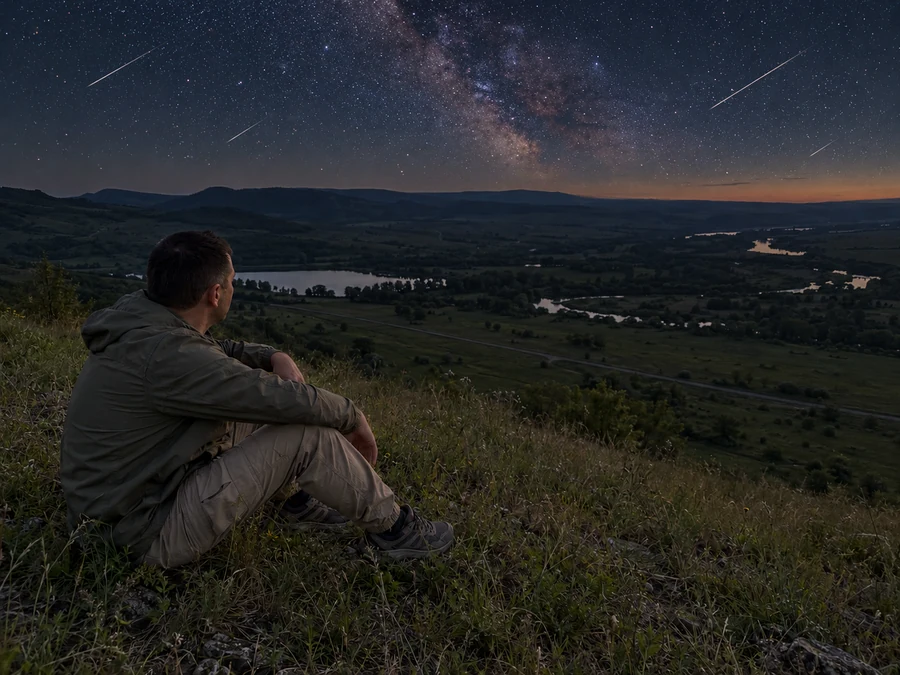
Сделай реалистичный ночной снимок звёздного неба над той же долиной: множество небольших звёзд разной яркости, умеренно заметная полоса Млечного Пути и три-четыре тонких метеорных следа в разных местах верхней части неба. Отличие от эффекта одного метеора должно быть очевидным: здесь целое звёздное небо и несколько более тонких следов.
Показать полный промпт
Отредактируй только загруженное исходное фото. Сохрани того же мужчину с короткой тёмной стрижкой, оливковую ветровку, песочно-бежевые брюки, серые треккинговые кроссовки, черты и видимый край лица, направление взгляда, положение головы, плеч, рук, пальцев, коленей и обеих стоп. Сохрани точную композицию, ракурс, горизонтальное кадрирование и пропорции исходника: человек слева на травяном склоне, те же изгибы реки, озеро, дорога и холмы на прежних местах. Камеру не двигай, человека не увеличивай и не уменьшай, не переставляй объекты. Все реальные предметы должны выглядеть снятыми смартфоном: натуральная кожа и ткань со складками, реальные травинки, лёгкий шум сенсора, слегка мягкий дальний план, без ретуши, глянца, пластика, живописности и чрезмерной резкости. Не добавляй лишние пальцы, конечности, предметы, людей, надписи, логотипы, рамки, водяные знаки или коллажи. Верни одно полное горизонтальное фото тех же пропорций. Сделай реалистичный ночной снимок звёздного неба над той же долиной: множество небольших звёзд разной яркости, умеренно заметная полоса Млечного Пути и три-четыре тонких метеорных следа в разных местах верхней части неба. Отличие от эффекта одного метеора должно быть очевидным: здесь целое звёздное небо и несколько более тонких следов. Солнце убрано, у горизонта слабое естественное послесвечение. Мужчина и трава слегка освещены остаточным светом, без изменения позы. Тёмная вода отражает слабое небо без яркого солнечного блика. Без огромных звёзд, планет, северного сияния, фантастических гор и космических кораблей. Дополнительное обязательное условие: НЕ меняй высоту горизонта, линию дальних холмов, размер озера слева и положение головы относительно озера. Все границы ландшафта должны совпадать с исходником. Не опускай человека и дальние холмы ради большего неба. Редактируй звёздное небо только выше существующей линии холмов, а остальное меняй только по яркости. Звёзды и метеорные следы размещай в уже имеющемся пространстве неба. Форма исходных видимых рук и обуви остаётся точной.Результат: Сравни положение головы и рук с исходником. Меняется небо, а не поза человека.
7. Осень
Трава становится охристой, деревья в долине - жёлтыми и рыжими. Человек сидит на том же склоне.
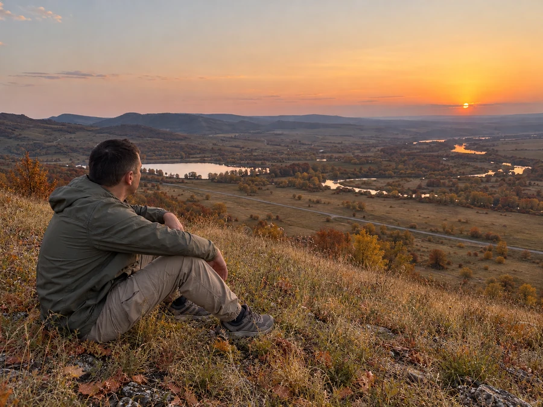
Смени только сезон на позднюю осень. Деревья и кусты в той же долине становятся жёлтыми, рыжими и красно-коричневыми; трава склона соломенно-жёлтая и оливковая с небольшими зелёными участками.
Показать полный промпт
Отредактируй только загруженное исходное фото. Сохрани того же мужчину с короткой тёмной стрижкой, оливковую ветровку, песочно-бежевые брюки, серые треккинговые кроссовки, черты и видимый край лица, направление взгляда, положение головы, плеч, рук, пальцев, коленей и обеих стоп. Сохрани точную композицию, ракурс, горизонтальное кадрирование и пропорции исходника: человек слева на травяном склоне, те же изгибы реки, озеро, дорога и холмы на прежних местах. Камеру не двигай, человека не увеличивай и не уменьшай, не переставляй объекты. Все реальные предметы должны выглядеть снятыми смартфоном: натуральная кожа и ткань со складками, реальные травинки, лёгкий шум сенсора, слегка мягкий дальний план, без ретуши, глянца, пластика, живописности и чрезмерной резкости. Не добавляй лишние пальцы, конечности, предметы, людей, надписи, логотипы, рамки, водяные знаки или коллажи. Верни одно полное горизонтальное фото тех же пропорций. Смени только сезон на позднюю осень. Деревья и кусты в той же долине становятся жёлтыми, рыжими и красно-коричневыми; трава склона соломенно-жёлтая и оливковая с небольшими зелёными участками. На переднем плане немного естественно опавших листьев от существующей растительности, без новых крупных деревьев. Умеренное исходное закатное небо и направление света сохраняются, одежда и человек неизменны. Осенние цвета должны читаться во всей долине, а не только как оранжевый фильтр поверх фото. Без тумана, снега, дождя, фонарей и искусственных световых частиц.Результат: Смотри на растительность: осенняя листва должна менять пейзаж, а не окрашивать кожу в оранжевый.
8. Снегопад
Склон, берега и деревья покрывает снег, в воздухе появляются снежинки. Изгибы реки остаются узнаваемыми.
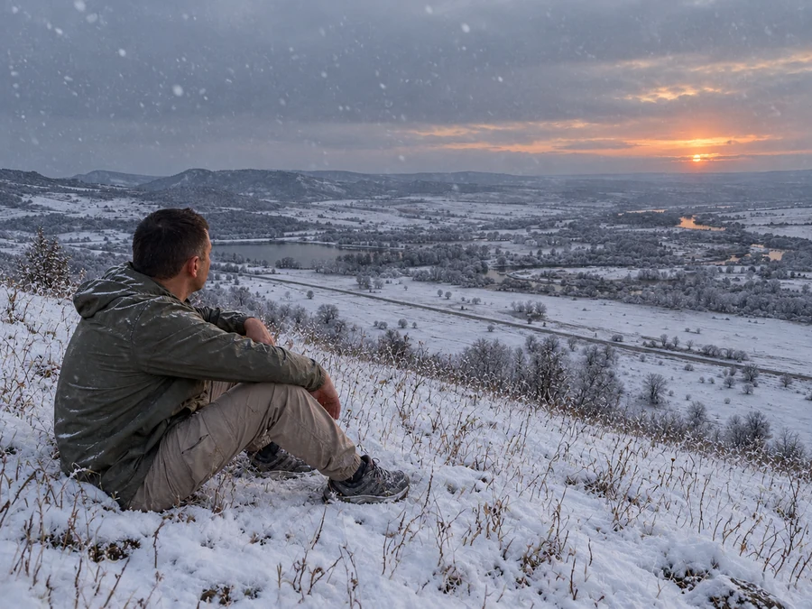
Смени сезон на снежный зимний вечер: снег естественно покрывает склон и ветви деревьев в долине, голые лиственные деревья, на переднем плане из снега местами торчат сухие травинки. Хорошо видимые мелкие и несколько крупных снежинок на разной глубине, холодное пасмурное серо-голубое небо с небольшим остаточным закатным светом справа.
Показать полный промпт
Отредактируй только загруженное исходное фото. Сохрани того же мужчину с короткой тёмной стрижкой, оливковую ветровку, песочно-бежевые брюки, серые треккинговые кроссовки, черты и видимый край лица, направление взгляда, положение головы, плеч, рук, пальцев, коленей и обеих стоп. Сохрани точную композицию, ракурс, горизонтальное кадрирование и пропорции исходника: человек слева на травяном склоне, те же изгибы реки, озеро, дорога и холмы на прежних местах. Камеру не двигай, человека не увеличивай и не уменьшай, не переставляй объекты. Все реальные предметы должны выглядеть снятыми смартфоном: натуральная кожа и ткань со складками, реальные травинки, лёгкий шум сенсора, слегка мягкий дальний план, без ретуши, глянца, пластика, живописности и чрезмерной резкости. Не добавляй лишние пальцы, конечности, предметы, людей, надписи, логотипы, рамки, водяные знаки или коллажи. Верни одно полное горизонтальное фото тех же пропорций. Смени сезон на снежный зимний вечер: снег естественно покрывает склон и ветви деревьев в долине, голые лиственные деревья, на переднем плане из снега местами торчат сухие травинки. Хорошо видимые мелкие и несколько крупных снежинок на разной глубине, холодное пасмурное серо-голубое небо с небольшим остаточным закатным светом справа. Река и озеро остаются на своих местах, вода тёмная, берега заснежены. Тонкий снег на плечах ветровки и краях обуви допустим; одежду не заменяй на другой костюм, руки, колени и обувь не перестраивай. Не делай снежную фигуру вместо человека. Без глянца, новогоднего декора, дождя и световых следов.Результат: Сравни рельеф и воду с исходником: снег не должен заменять долину новым зимним пейзажем.
9. Винтажная вспышка
Прямой свет вспышки освещает человека и ближнюю траву, а дальний план остаётся темнее.
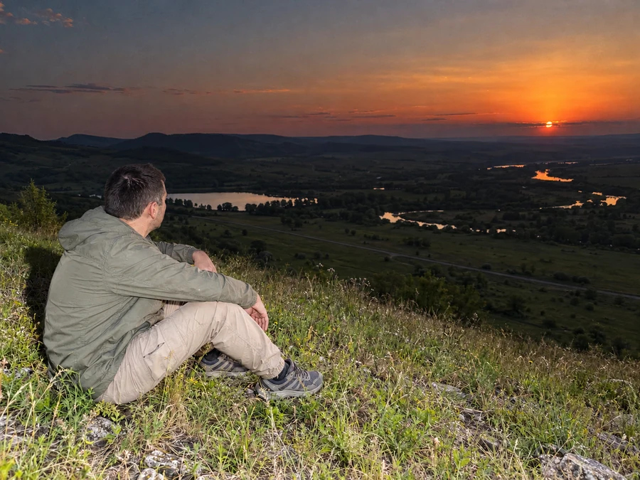
Сделай реалистичный снимок обычной компактной камеры с прямой встроенной вспышкой. Жёсткая близкая вспышка со стороны камеры отчётливо высветляет спину, плечи, руки, брюки, обувь и ближайшие травинки, сохраняя настоящую текстуру и небольшие пересветы на ткани.
Показать полный промпт
Отредактируй только загруженное исходное фото. Сохрани того же мужчину с короткой тёмной стрижкой, оливковую ветровку, песочно-бежевые брюки, серые треккинговые кроссовки, черты и видимый край лица, направление взгляда, положение головы, плеч, рук, пальцев, коленей и обеих стоп. Сохрани точную композицию, ракурс, горизонтальное кадрирование и пропорции исходника: человек слева на травяном склоне, те же изгибы реки, озеро, дорога и холмы на прежних местах. Камеру не двигай, человека не увеличивай и не уменьшай, не переставляй объекты. Все реальные предметы должны выглядеть снятыми смартфоном: натуральная кожа и ткань со складками, реальные травинки, лёгкий шум сенсора, слегка мягкий дальний план, без ретуши, глянца, пластика, живописности и чрезмерной резкости. Не добавляй лишние пальцы, конечности, предметы, людей, надписи, логотипы, рамки, водяные знаки или коллажи. Верни одно полное горизонтальное фото тех же пропорций. Сделай реалистичный снимок обычной компактной камеры с прямой встроенной вспышкой. Жёсткая близкая вспышка со стороны камеры отчётливо высветляет спину, плечи, руки, брюки, обувь и ближайшие травинки, сохраняя настоящую текстуру и небольшие пересветы на ткани. Долина и исходный закат на заднем плане заметно темнее из-за экспозиции под вспышку. Естественная резкая тень от фигуры на траве уходит от камеры; свет низкого солнца справа остаётся вторичным. Лёгкий шум и зерно компактной камеры. Без изменения позы, новых конечностей, студийного света, глянцевой кожи, ретро-предметов, рамки и надписей.Результат: Заметная разница здесь - яркий передний план и тёмная даль, а не светящиеся края тела.
10. Кадр фильма
Над долиной появляются выразительные облака и световые лучи. Цвет и свет меняют настроение того же снимка.
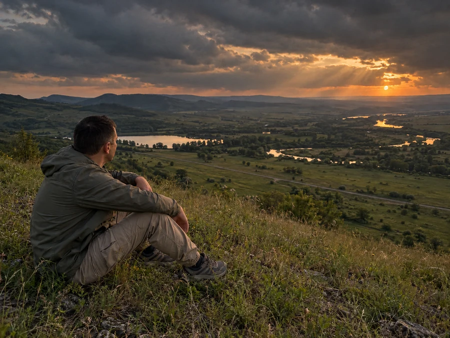
Преврати фото в правдоподобный кадр современного художественного фильма с драматичным естественным светом. В том же небе добавь объёмные тёмные дождевые облака с одним просветом у существующего солнца справа; несколько широких естественных солнечных лучей проходят через просвет над долиной.
Показать полный промпт
Отредактируй только загруженное исходное фото. Сохрани того же мужчину с короткой тёмной стрижкой, оливковую ветровку, песочно-бежевые брюки, серые треккинговые кроссовки, черты и видимый край лица, направление взгляда, положение головы, плеч, рук, пальцев, коленей и обеих стоп. Сохрани точную композицию, ракурс, горизонтальное кадрирование и пропорции исходника: человек слева на травяном склоне, те же изгибы реки, озеро, дорога и холмы на прежних местах. Камеру не двигай, человека не увеличивай и не уменьшай, не переставляй объекты. Все реальные предметы должны выглядеть снятыми смартфоном: натуральная кожа и ткань со складками, реальные травинки, лёгкий шум сенсора, слегка мягкий дальний план, без ретуши, глянца, пластика, живописности и чрезмерной резкости. Не добавляй лишние пальцы, конечности, предметы, людей, надписи, логотипы, рамки, водяные знаки или коллажи. Верни одно полное горизонтальное фото тех же пропорций. Преврати фото в правдоподобный кадр современного художественного фильма с драматичным естественным светом. В том же небе добавь объёмные тёмные дождевые облака с одним просветом у существующего солнца справа; несколько широких естественных солнечных лучей проходят через просвет над долиной. Глубокие мягкие тени на склоне, сдержанные землистые цвета, умеренно тёплый свет на воде и одежде, чёткое разделение планов атмосферой. Сохрани естественную фотографическую фактуру и обычные пропорции тела. Главное отличие от одной киноцветокоррекции: здесь заметно меняется рисунок облаков и направленного света. Не добавляй чёрные киношные полосы, титры, неоновый контур, метеоры, крупные фантастические горы и сверхнасыщенный закат. Дополнительное обязательное условие: в кадре ровно ОДИН источник солнечного света, только маленький диск исходного солнца у правого горизонта. Единственный просвет в тёмных облаках расположен непосредственно вокруг этого низкого диска. Над ним нет отдельных ярко-белых круглых дыр, вторых светящихся дисков и второго солнца. Несколько мягких лучей расходятся только из этого единственного низкого просвета влево над долиной. Выше солнца облака тёмные сплошные, без светящихся пятен. Умеренная яркость и естественный телефонный снимок, без блестящего контура человека.Результат: Кинематографичный свет должен оставлять живую фактуру фото, без новых объектов и чёрных полос.
Памятка: чтобы менялся эффект, а не человек
- Оставляй первую часть запроса. Она описывает то, что должно сохраниться, и отделяет редактирование от придумывания новой сцены.
- Начинай каждый вариант с исходника. Одно фото позволяет сравнить свет и погоду без накопленных изменений от предыдущих вариантов.
- Выбирай эффект под свой кадр. Для метеора нужно небо, для тумана - пространство вдали. На крупном селфи эти эффекты не покажут то же, что на открытом пейзаже.
- Сравнивай мелочи. Пальцы, поворот головы, край лица, обувь и одежда важнее общего красивого света.
- Поза изменилась вместе с эффектом? Снова прикрепи исходник и оставь в начале запроса: «Камеру не двигай, человека не увеличивай и не уменьшай, не переставляй объекты». Это условие уже есть в каждом полном запросе; проверь, что оно не потерялось при сокращении.
- В ночном кадре осталось солнце? В запросе лунного света есть отдельное условие: «Убери солнечный диск и закатную оранжевую полосу». Для нового варианта снова прикрепи исходник и сохрани эту строку, чтобы просить именно смену времени суток.
- Оставляй названия брендов за пределами картинки. Для своих эффектов описывай свет, материал и фактуру, если логотипы в кадре не нужны.
Как собрать свой эффект из готового запроса
Оставь часть промпта про человека, позу и границы кадра, а последнее описание замени своим: например, другим освещением или временем года. Начни с одного изменения. Так легче сравнить результат с исходником и понять, что именно сработало.
Можно идти и в другую сторону: выбрать один эффект и применить его к нескольким фото. Общие условия при этом придётся подстроить под каждый кадр, а описание света оставить одинаковым.
Если нужен другой материал картинки, а не погода и свет, посмотри как перенести стиль фото в ChatGPT. А для более точной настройки освещения есть отдельная подборка промптов света и камеры.
Частые вопросы
Это встроенные эффекты ChatGPT?
Нет. Это десять текстовых заданий для редактирования загруженного изображения. Название помогает выбрать пример, а результат задаёт полный промпт.
Зачем каждый раз прикреплять исходник?
Так новый запрос начинается с того же фото. Если прикрепить уже изменённый результат, вместе с новым эффектом могут сохраниться и предыдущие изменения.
Можно просто скопировать запрос для своего фото?
Для исходника из этой статьи запрос можно оставить как есть. Если используешь свою фотографию, сначала замени описание мужчины, одежды и пейзажа на то, что видно на ней. Затем отправь изменённый запрос вместе со своей фотографией.
Лицо и руки останутся точно такими же?
Это требование запроса, а не гарантия совпадения каждого пикселя. Перед публикацией сравни лицо, руки и обувь с исходником. Если они изменились, вернись к исходному фото и уточни, что именно нужно оставить.
Почему на моём фото нет такого же результата?
Эффект зависит от исходного кадра. Без открытого неба метеор или луна не будут выглядеть как на пейзаже. Проверь, подходит ли снимок, и убери из запроса предметы, которых у тебя нет.
Одно фото готово. Что делать с серией
В начале проблема была в том, что за новым эффектом терялся сам снимок. Теперь в каждом запросе разделены две задачи: сохранить то, что уже есть, и описать одно изменение. Это и позволяет собрать серию, в которой зритель узнаёт исходный кадр.
Чтобы превратить обработанные фото в публикации, нужны ещё подпись, порядок кадров и страница с запросами. Ниже - как поручать нейросетям эти задачи, даже если ты не знаешь кода.
Как поручить нейросетям работу над своим контентом?
Что можно делать с нейросетями, если не знаешь кода?
Чтобы почувствовать размах, посмотри Концентрат Ивана Сергеева. ИИ-агенты на твоих глазах собирают продукт, контент, сайты и воронки без кода. Это основа под любую цель: свои услуги, партнёрка, чужой бизнес. Три дня бесплатно, VIP с четвёртым днём - 990 ₽
Забрать КонцентратУже знаешь, чего хочешь? Тогда в мастер-группу Ивана: система продаж на ИИ без продюсера и технаря, сопровождение и сообщество
Заполнить анкету предзаписиНабор открывается редко, кто записался заранее, получает лучшую цену и бонусы. Платить сейчас не нужно
Реклама. ИП Сергеев И. С., ИНН 352511695540. erid: 2Vtzqvk2p6q